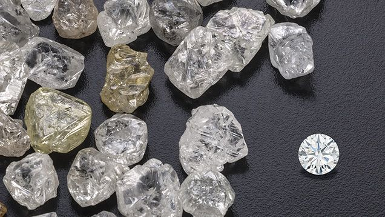
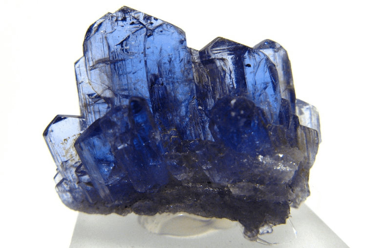
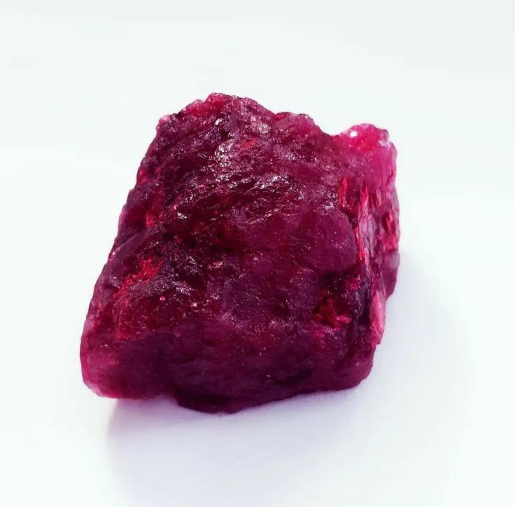

Виды дорогих камней и их особенности
В мире существуют ценные самоцветы, которые не входят в основной рейтинг, но при этом обладают уникальными свойствами и высокой инвестиционной ценностью

В мире существуют ценные самоцветы, которые не входят в основной рейтинг, но при этом обладают уникальными свойствами и высокой инвестиционной ценностью. Давайте выделим самые популярные драгоценные камни.
Бесцветные алмазы
Бриллиант — ограненный алмаз — остаётся самым узнаваемым ювелирным камнем в мире. Его ценность определяется по системе 4C: цвет (Color), чистота (Clarity), огранка (Cut) и вес в каратах (Carat). Бесцветный алмаз категории D с безупречной чистотой и превосходной огранкой — эталон, к которому стремятся коллекционеры. В отличие от цветных алмазов, бесцветные добываются на всех континентах, что делает их доступнее, хотя и не менее прекрасными.
Стоимость камня: от 1 000 до 17 000 долларов (~79 000 — 1 343 000 рублей) за карат в зависимости от характеристик по системе 4C.

Сапфиры
Среди всех видов сапфиров кашмирские образцы без термообработки ценятся превыше всего. Что дороже — сапфир или изумруд? Эталонный кашмирский или мьянманский сапфир насыщенного синего цвета без термической обработки может стоить дороже большинства изумрудов. Негретые синие сапфиры высшего качества из Кашмира — настоящая редкость, их месторождения практически истощены. Отличие сапфира от рубина в том, что оба они являются корундом, но разного цвета: рубин — красный корунд, сапфир — синий.
Стоимость: от 5 000 до 30 000 долларов (~395 000 — 2 370 000 рублей) за карат для высококачественных необработанных образцов.

Красный берилл
Красный берилл (биксбит) — добывается исключительно в штате Юта, США. Красный берилл — «прямой родственник» изумруда и аквамарина, однако несравнимо более редкий. Минерал был открыт американским геологом Мейнардом Биксби в 1897 году и долгое время оставался практически неизвестным широкой публике. Качественное ювелирное сырьё добывается исключительно в штате Юта (США). По оценкам специалистов, красный берилл встречается в 8 000 раз реже, чем изумруд.
Стоимость: от 6 000 до 10 000 долларов (~474 000 — 790 000 рублей) за карат. Коллекционные экземпляры с высокой чистотой и насыщенным цветом оцениваются значительно выше.

Чёрный опал
Чёрный опал из Лайтнинг-Ридж, Австралия — радужная опалесценция на тёмном фоне. Чёрный опал — единственный камень в этом списке, ценность которого определяется не цветом, а игрой света внутри. На тёмном фоне минерала вспыхивают радужные огни — эффект называется «опалесценцией». Лучшие в мире чёрные опалы добываются исключительно в австралийском районе Лайтнинг-Ридж. Ни одно другое месторождение не даёт столь насыщенного цвета и яркой игры света.
Стоимость: качественные австралийские чёрные опалы достигают 10 000 долларов (~790 000 рублей) за карат. Особо редкие экземпляры с полным спектром цветов продаются на аукционах за значительно большие суммы.
Популярные вопросы о драгоценных камнях
Как правило, покупатели украшений и ценители самоцветов задают одни и те же вопросы. Мы собрали самые частые — и ответили на них честно.
1.Сколько стоит самый дорогой камень в мире?
Самый дорогой камень в мире по цене за карат — красный алмаз. Его стоимость начинается от 1 миллиона долларов (~79 000 000 рублей) за карат и не имеет верхней границы: всё зависит от веса, чистоты и момента продажи. Самая высокая задокументированная цена за красный бриллиант составила около 1,56 миллиона долларов за карат при продаже Moussaieff Red в 2001 году. Сегодня, после закрытия рудника Аргайл, реальная рыночная цена была бы значительно выше.
Если же говорить об итоговой сумме сделки — абсолютный рекорд принадлежит розовому бриллианту Pink Star: 71,2 миллиона долларов (~5 624 800 000 рублей) на аукционе Sotheby's в Гонконге в 2017 году.
2. Как называется самый дорогой камень в мире?
Самый дорогой драгоценный камень в мире по цене за карат — красный алмаз, категория Fancy Red. Среди всех природных минералов именно он занимает первую строчку рейтинга как по цене за карат, так и по редкости. Если говорить о самом дорогом конкретном камне по итоговой цене продажи на аукционе — это розовый бриллиант «Розовая звезда» (CTF Pink Star), проданный за 71,2 миллиона долларов.
3. Как выглядит самый дорогой камень в мире
Красный алмаз внешне выглядит как бриллиант, но с насыщенным красным цветом без фиолетового или коричневого оттенка. Большинство известных экземпляров очень маленькие — почти все весят меньше 1 карата, а Moussaieff Red (5,11 карата) считается гигантом среди себе подобных. Именно кажущаяся скромность размера в сочетании с невероятной редкостью делает красный алмаз столь ценным: он выглядит как камень, которого почти не существует в природе.
Мир самых дорогих камней — это мир крайностей. Красный алмаз стоит больше миллиона долларов за карат, а грандидьерит существует буквально в единичных ограненных экземплярах. Турмалин Параиба открыли менее сорока лет назад — и он уже стоит дороже многих классических самоцветов. Изумруд остаётся востребованным тысячелетиями, а жадеит был культовым камнем великих цивилизаций.
Стоимость любого драгоценного камня — это формула из четырёх переменных: редкость происхождения, насыщенность цвета, чистота и мастерство огранки. Именно поэтому два изумруда одинакового веса могут различаться по цене в несколько раз — и оба будут настоящими.
Если вы выбираете украшение с драгоценным камнем, помните: по-настоящему ценным его делает не только рыночная стоимость, но и история происхождения, уникальность и то, насколько камень резонирует именно с вами. Украшения с рубинами, изумрудами, сапфирами и александритами — это не просто аксессуар, а инвестиция в красоту, которая не теряет ценности.
Фотографии по теме